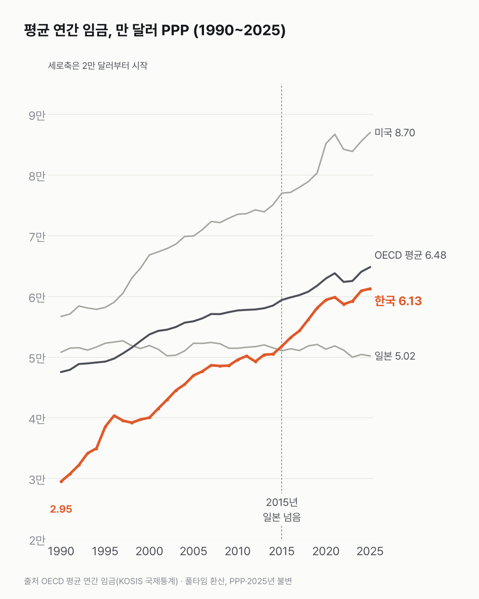
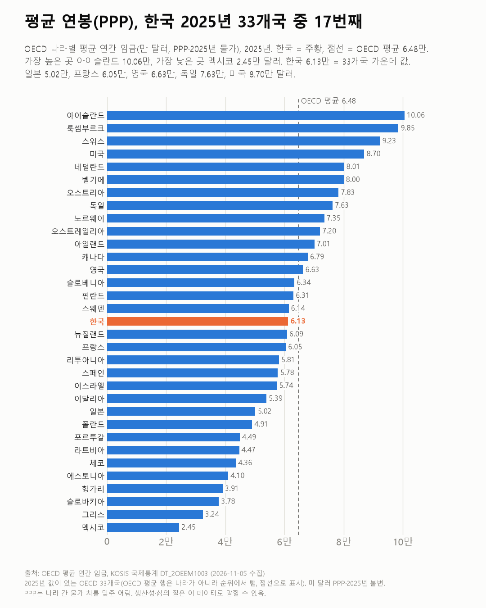

물가를 맞추면 한국 평균 연봉은 OECD 몇 번째일까요?
OECD 33개국을 줄 세우면 한국은 딱 가운데예요. 올라온 속도는 일본과 많이 달랐어요.

- 물가 차이를 맞춰 보면 2025년 한국 평균 연봉은 6.13만 달러, OECD 평균(6.48만 달러)의 94.5%예요.
- 1990년 2.95만 달러에서 2.1배가 됐어요.
- 2015년에 일본을 넘었고, 2025년엔 33개국 중 17번째예요.
옆 나라 일본을 한국 옆에 그려 보면 두 선이 한 번 엇갈려요. 일본 평균 연봉은 35년 동안 5만 달러 남짓에서 거의 움직이지 않았어요. 1990년 5.08만, 2025년 5.02만 달러예요.
한국은 1990년 2.95만 달러에서 2025년 6.13만 달러가 됐어요. 물가를 맞춘 값으로 2.1배예요. 2015년에 일본을 넘었고, 2025년엔 차이가 1.11만 달러예요.
다른 나라도 올랐어요. 같은 기간 OECD 평균은 4.75만에서 6.48만, 미국은 5.67만에서 8.70만 달러가 됐어요. 2025년 한국은 OECD 평균의 94.5%이고, 원화로는 5,392만 원이에요(풀타임 환산 평균).
33개국을 줄 세우면 한국은 17번째예요. 딱 가운데예요. 가장 높은 곳은 아이슬란드(10.06만), 가장 낮은 곳은 멕시코(2.45만 달러)예요. 프랑스는 6.05만, 영국 6.63만, 독일 7.63만 달러예요.

이 줄은 평균끼리 세운 거예요. 한가운데 사람의 연봉으로 다시 세우면 한국이 몇 번째에 설지 궁금해졌어요.
이 숫자는 어디서 왔나요
출처
기준일 1990~2025년이에요.
OECD
- 평균 연간 임금KOSIS DT_2OEEM1003원본 보기
1990~2025, 미 달러 PPP·2025년 불변 / 한국 원화
어떻게 셌나요
- OECD가 나라마다 같은 방식으로 낸 값이에요. 평균 연간 임금은 풀타임 환산(시간제 근로자를 풀타임 기준으로 바꿔 센 것) 근로자 1명당 평균이에요.
- 나라 전체 임금 총액을 평균 근로자 수로 나누고, 풀타임 시간 비율을 곱해 내요(표 주석). 그래서 국내 임금조사 평균과 숫자가 달라요.
- 나라끼리 비교할 때는 PPP(구매력 평가, 나라 간 물가 차이를 맞춘 환산) 미 달러, 2025년 물가 기준으로 봤어요.
- 순위는 OECD 평균 행을 빼고 33개국 가운데 몇 번째인지로 셌어요.
한계 4가지
이 데이터로 말할 수 없는 것
- 같은 OECD 표로 본 성별 임금 격차 글, 근로시간 글도 있어요.
- 평균이라 높은 임금에 끌려 올라가요. 보통 사람의 연봉(중위)과 달라요. 풀타임 환산이라 실제로 받은 돈과도 달라요.
- PPP는 나라 간 물가 차를 맞춘 어림이에요. 환율로 바꾸면 순위가 달라질 수 있어요. 생산성·삶의 질은 이 데이터로 말할 수 없어요.
- 최저임금과의 비교는 최저임금 OECD 글, 회사 크기별 월급은 회사 크기별 월급 글에서 다뤘어요.
새 글 나오면 받아 보기
피드 리더 앱에 이 사이트 주소를 한 번 넣어 두면, 새 글이 올라올 때 앱에 떠요. 가입이나 메일 주소는 필요 없어요.
받는 법 보기
- 피드 리더 앱을 하나 골라요. 새 글을 모아 보여 주는 앱이에요. 예를 들면 Feedly나 Inoreader가 있어요. 둘 다 무료고 웹·휴대폰에서 써요.
- 앱에서 '구독 추가'(+)를 누르고 아래 주소를 붙여 넣어요.
- 끝이에요. 새 글이 올라오면 앱 목록에 떠요.
https://protofu.github.io/opendata-insight/feed.xmlFeedly를 쓴다면 여기를 눌러 바로 추가할 수도 있어요.